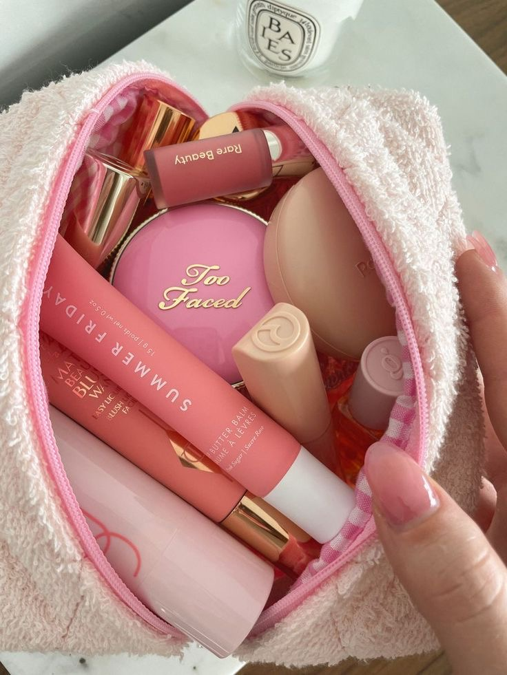

Makeup Favourites ♡
October 1, 2023 by Dayna Thomas
When it comes to makeup, I've always been a firm believer in enhancing my natural beauty rather than masking it. That's why my go-to makeup products have always been those that help me achieve a flawless yet natural look. One of my absolute favourites is the Too Faced Born This Way Concealer in the shade Butterscotch. Its creamy texture effortlessly covers imperfections while still allowing my skin to shine through. Paired with the Born This Way Foundation in the shade Mocha, this duo creates a seamless canvas that looks like my skin, only better. It's perfect for those days when I want a fresh, radiant complexion that feels weightless.
While I adore a natural makeup look, I also enjoy experimenting with different styles and adding a pop of colour to my cheeks. Rare Beauty's blush in the shade Lucky is a staple in my collection. Its soft, buildable formula gives my cheeks a natural flush that lasts all day. And when I'm in the mood for a more rosy glow, Patrick Ta's She's a Doll blush delivers just the right amount of pigment to make my cheeks pop. To complete my look, I use the Makeup by Mario Contour Stick in the shade Dark to sculpt and define my features. These makeup products not only help me feel confident and beautiful but also allow me to express my creativity through different makeup looks!